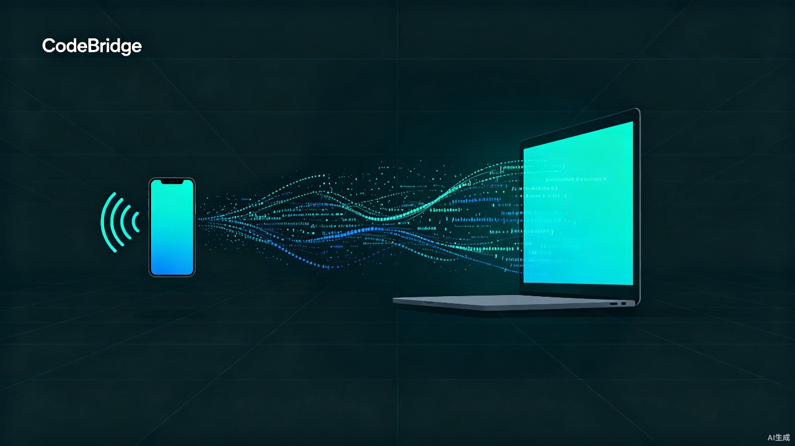
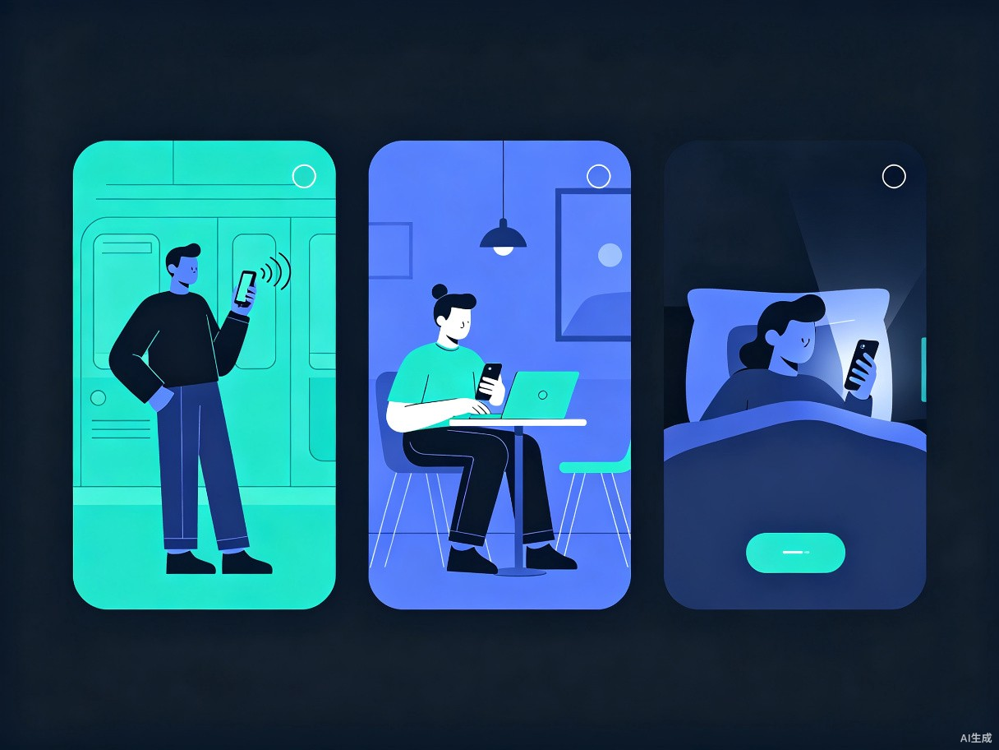

语音远程编程助手 -- 用手机语音指挥电脑里的AI编程助手，实现随时随地 Coding
手机端通过语音识别将自然语言转化为操作指令，经安全通道传输至电脑端，电脑端客户端接收指令后操控 Trae Work 等编程助手执行任务，并将执行结果实时回传至手机端展示，形成完整的闭环交互链路。
软件开发者、程序员、技术团队负责人，以及需要利用碎片化时间处理编程任务的远程办公人群。
通勤地铁上查看AI生成的代码执行结果并给出修改指令；咖啡厅里语音安排编程助手完成模块开发；出差途中远程跟进项目构建进度；深夜灵感突现时躺在床上指挥电脑继续干活。

开发者必须回到电脑前才能操作编程助手，物理空间成为效率的硬性瓶颈
手机无法直接查看代码执行结果和报错信息，远程排错几乎不可能
大量碎片化时间（通勤、等候）被迫闲置，紧急问题也无法及时响应
传统远程桌面方案延迟高、操作繁琐，且在手机上操作桌面级应用体验极差
打破物理空间限制，将AI编程助手的使用场景从"电脑前"拓展到"随时随地"。开发者能够充分利用通勤、等候等碎片化时间持续推动编程任务，实现真正的不间断开发，让每天多出1-2小时的有效编码时间。
在远程办公和弹性工作日益普及的背景下，该产品显著提升了开发者的工作灵活性和生产力，为个人开发者和企业技术团队创造更高的时间价值产出，是AI编程工具生态中缺失的关键一环。